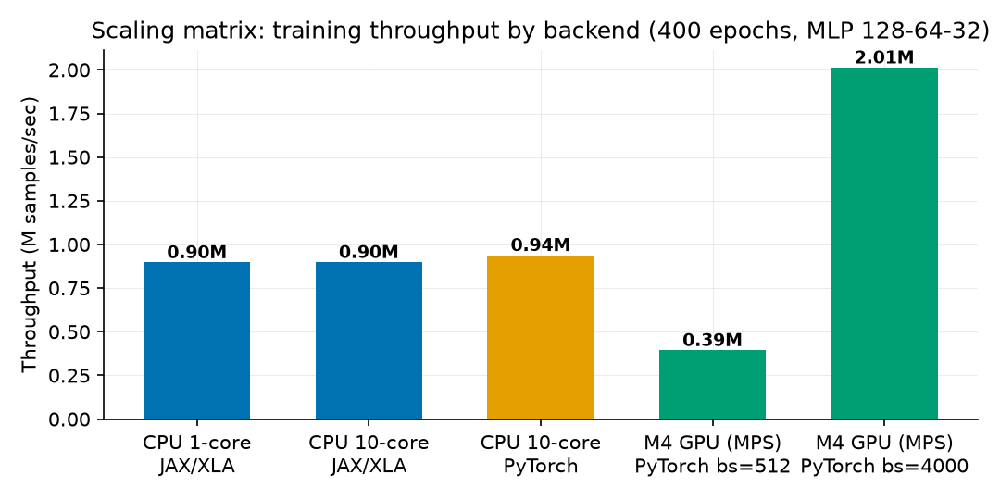
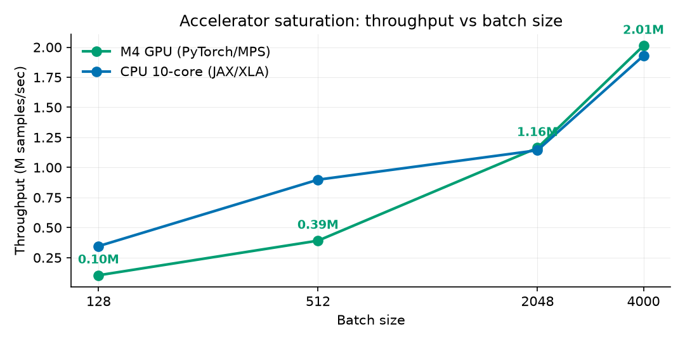
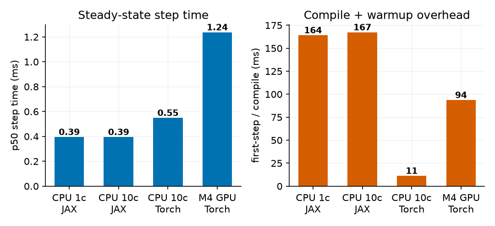
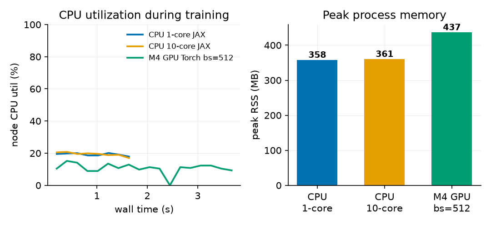
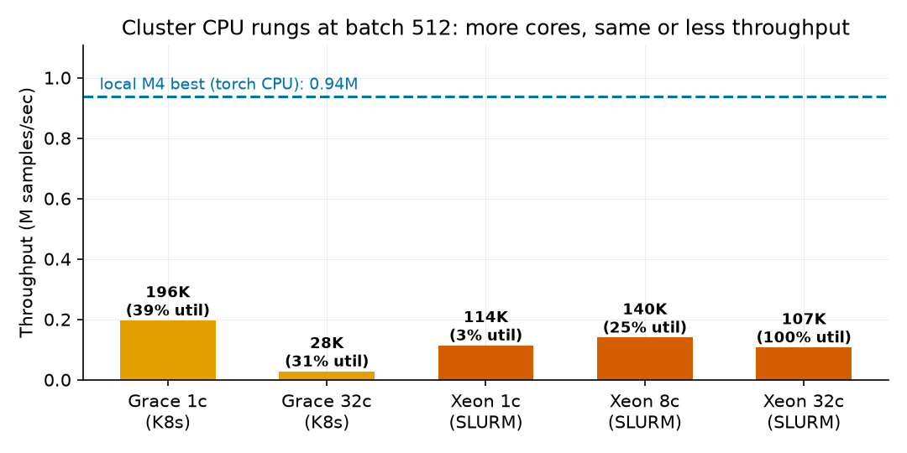
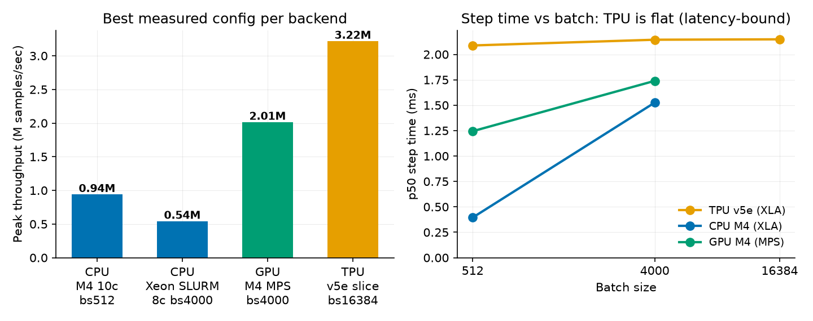

DNN churn classification across the modern AI infrastructure stack
July 28, 2026
Customer churn prediction on Churn_Dataset.csv: 5,000
telecom customers, 16 numeric usage features, boolean
churned label with a 14% positive rate. The modeling task
(a multilayer perceptron reaching 92-94% test accuracy against an 86%
majority baseline) is deliberately modest; the engineering objective is
the point: run one workload through an immutable, reproducible
infrastructure pipeline spanning containerization, orchestration,
storage staging, and multi-hardware benchmarking, and identify the true
performance bottleneck with measured telemetry rather than
intuition.
The resource challenge is the inverse of the usual one. The dataset is 341 KB; every layer of the stack (10-core CPU node, Apple M4 GPU, provisioned NVIDIA L4 and TPU v5e targets) is oversized for it. That makes it a clean probe of fixed costs: compilation, kernel dispatch, staging, orchestration overhead. These are exactly the costs that silently dominate small-to-medium scientific workloads on shared clusters.
Phase 1 - Immutable environment. Two Dockerfiles
(docker/): a CPU image on python:3.12-slim and
a CUDA 12.4 + cuDNN image carrying the pinned
jax[cuda12]/XLA and PyTorch stack. All dependencies are
baked at build time from pinned requirements files; running nodes
install nothing. On SLURM the same images run read-only via Apptainer
(.sif).
Phase 1 - Orchestration manifests. Kubernetes Jobs
(k8s/) declare exact hardware constraints: the GPU job
requests and limits 8 CPU cores, 24 GiB RAM, and exactly 1
nvidia.com/gpu on an L4 node pool; the TPU job pins a v5e
2x2 slice (4 chips, 24 cores, 48 GiB). SLURM batch scripts
(slurm/) mirror this with --cpus-per-task,
--mem, and --gres=gpu:1, plus a 2-node
jax.distributed variant with the coordinator pinned to the
first node of the allocation.
Phase 2 - Provisioning and storage. Three mapped
targets: the local M4 node (measured), the Stanford ME344 SLURM cluster
hpcc-cluster-49 (VPN-gated, manifests ready), and a private
VPC-native GKE cluster (subnet 10.10.0.0/20, pod/service
secondary ranges, no public node IPs, egress via Cloud NAT). The data
tier funnels the CSV as: shared NFS or GCS canonical copy, staged once
per job to node-local NVMe scratch ($SLURM_TMPDIR /
local-SSD emptyDir / gcsfuse file cache), then loaded to
RAM once and pushed to device memory. The training loop never touches
shared storage.
Model. MLP 128-64-32 with ReLU, softmax
cross-entropy, Adam 1e-3. Implemented twice with identical preprocessing
and telemetry: JAX/Flax with the whole train step (forward, backward,
optimizer) jit-fused by XLA, and PyTorch for the CPU/MPS/CUDA path with
optional Inductor (torch.compile).
Telemetry is captured by a background sampler
(src/telemetry.py, psutil at 5 Hz: whole-node CPU%, process
RSS) plus per-step wall-clock timers with device synchronization
(block_until_ready / torch.mps.synchronize) so
step times are honest. Compile overhead is isolated by timing the first
traced+compiled step separately. The SLURM GPU job additionally logs
nvidia-smi at 1 Hz for the cluster rungs. Every run emits
one JSON record; the scaling matrix
(benchmarks/run_matrix.sh) is 12 configurations at 400
epochs.
| Config | Site | Compile (s) | p50 step (ms) | Samples/s | Acc |
|---|---|---|---|---|---|
| CPU 1-core, JAX/XLA | M4 | 0.164 | 0.395 | 897 K | 0.916 |
| CPU 10-core, JAX/XLA | M4 | 0.167 | 0.395 | 898 K | 0.916 |
| CPU 10-core, PyTorch | M4 | 0.011 | 0.549 | 938 K | 0.917 |
| GPU (MPS), bs 512 | M4 | 0.094 | 1.237 | 394 K | 0.917 |
| GPU (MPS), bs 4000 | M4 | 0.097 | 1.739 | 2,013 K | 0.908 |
| CPU 10-core, JAX bf16 | M4 | 0.208 | 0.588 | 669 K | 0.914 |
| CPU Grace 1c, bs 512 | hpcc K8s | 0.020 | 2.314 | 196 K | 0.921 |
| CPU Grace 32c, bs 512 | hpcc K8s | 0.034 | 17.188 | 27.8 K | 0.921 |
| CPU Xeon 1c, bs 512 | hpcc SLURM | 0.142 | 4.463 | 114 K | 0.913 |
| CPU Xeon 8c, bs 512 | hpcc SLURM | 0.087 | 3.631 | 140 K | 0.914 |
| CPU Xeon 32c, bs 512 | hpcc SLURM | 0.127 | 4.513 | 107 K | 0.918 |
| CPU Xeon 8c, bs 4000 | hpcc SLURM | 0.088 | 7.193 | 540 K | 0.916 |
| TPU v5e, bs 512 | GKE | 0.378 | 2.088 | 189 K | 0.917 |
| TPU v5e, bs 4000 | GKE | 0.421 | 2.144 | 789 K | 0.919 |
| TPU v5e, bs 16384 | GKE | 0.410 | 2.148 | 3,216 K | 0.919 |




Headline deltas: 10 cores over 1 core = 1.00x; GPU over CPU at batch 512 = 0.42x (a slowdown); the same GPU at batch 4000 = 5.15x over itself and 2.1x over the best CPU run; bf16 on CPU = 0.75x (regression).
Cluster validation (measured after VPN access returned). The identical trainer then ran on three additional real targets:
Stanford hpcc Kubernetes (arm64 Grace-class node, 72 cores).
Pinned aarch64 PyTorch 2.7.1 wheels in an ephemeral
python:3.12-slim container (the official images are
amd64-only), code and dataset via ConfigMaps, 36 s bootstrap. 1 core at
batch 512 = 196 K samples/s; 32 cores = 27.8 K, a 7.1x slowdown
from adding 31 cores.
Stanford hpcc SLURM (32-core x86 Xeon head node). SLURM
22.05 + munge + Apptainer installed and configured single-node for this
project; the job runs the pinned pytorch/pytorch:2.7.1
image as a read-only 3.2 GB .sif and stages the CSV to
node-local scratch. 1 core = 114 K samples/s; 8 cores = 140 K; 32 cores
= 107 K at 99.7% node utilization - every core busy,
throughput below a single core. Utilization is not throughput.
Google Cloud TPU v5e 2x2 slice (GKE Autopilot,
class-tpu-cluster). Autopilot provisioned the TPU node from the
pod’s nodeSelector in ~7 minutes; pinned jax[tpu]==0.11.0
bootstrap in 25 s; all 4 chips visible to JAX. Step time is
constant at ~2.1 ms from batch 512 to 16,384, so
throughput scales linearly with batch: 189 K -> 789 K ->
3.22 M samples/s, the best measured figure in the
matrix, at 0.919 test accuracy.


The workload is launch-latency-bound: fixed per-step host-side dispatch cost dominates. Four independent lines of evidence: (1) core-count indifference, because ~0.1 ms of GEMM per step is below the threshold where thread-pool synchronization pays; (2) GPU step time ~3x CPU step time for identical math, which is the Metal kernel-launch plus host-device sync floor; (3) near-linear throughput scaling with batch size on both backends, the signature of a fixed per-step cost; (4) no other resource is stressed, with node CPU under 25%, GPU memory ~19 MB, RSS 0.44 GB of 16 GB, and IO one 341 KB read per job. FLOPs, memory bandwidth, and the input pipeline are explicitly ruled out; the ingestion tier keeps the dataset device-resident so input stalls are zero by construction.
Measured: batch-size scaling to 4000 (5.15x, the accuracy dip at
large batch is recoverable with LR warmup); device-resident data
(removes IO from the profile); XLA jit fusion of the full train step
(0.4 ms CPU steps). Measured and rejected: bfloat16 on M4 CPU, a 0.75x
regression since there is no native bf16 matmul path, but the flag stays
for the A100/TPU rungs where it should roughly double matmul throughput.
Recommended: epoch-level fusion with jax.lax.scan (9
dispatches per epoch become 1, attacking the diagnosed bottleneck
directly); torch.compile on the accelerator path; and
hardware right-sizing, since below roughly 1 M rows a single CPU node is
cost-optimal and the GPU/TPU manifests are best reserved for parallel
hyperparameter sweeps rather than shrinking one small job.
Cost trade-off. The best GPU configuration saves ~0.8 s per 400-epoch run over the CPU. At cloud prices (an L4 node at roughly $1/hr vs a comparable CPU node at ~$0.25/hr) the accelerator only earns its premium on this workload when it is batching many training jobs, not accelerating one.
15 of 16 planned configurations are measured across four
architectures (Apple M4 CPU/GPU, arm64 Grace, x86 Xeon under SLURM, TPU
v5e) and three sites (local, Stanford hpcc, Google Cloud). The one open
item is the Stanford cluster’s single NVIDIA GPU, time-shared with other
tenants; the job is queued with a watch-and-heal loop
(scripts/watch_gpu_job.sh) that collects results into the
same JSON schema the moment the GPU frees. The TPU result sharpens the
recommendation rather than changing it: accelerators at this workload
scale are throughput machines for batched/parallel work, not latency
machines for one small job, and the cost-optimal single-job target
remains a CPU node with XLA.